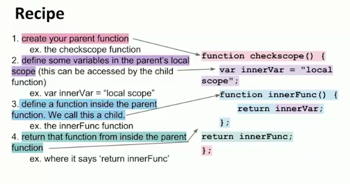
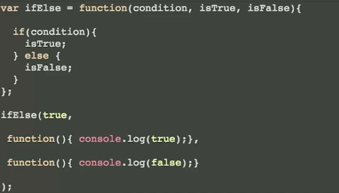
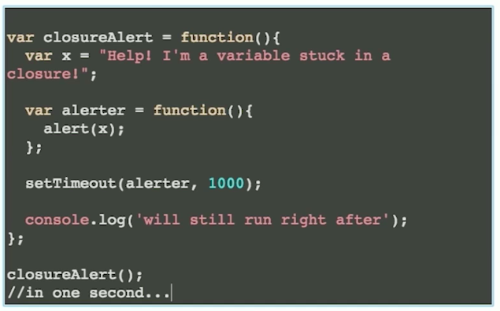

Higher-Order Functions in JavaScript
Let's Review Scope
The scope of a variabe or function is defined by its location within the source code (it is apparent lexically) and nested functions have access to variable declared in their outer scope.
We have covered this: it is global and local!
Lexical Scope
function init() {
var name = "Mozilla"; //name is a local variable created by init
function displayName() { //displayName() is the inner function, a closure
alert(name);
}
displayName();
}
init();
Introduction to closures!
A closure is created when an inner function is made accessible from outside of the function that created it. This typically occurs when an outer function returns an inner function. When this happens, the inner function maintains a reference to the environment in which it was created.
This means that it remembers all of the variables (and their values) that were in scope at the time.
Let's read through this document
Let's talk about this function
function sayHello(name){
var text = 'Hello ' + name;
var say = function() {
console.log(text)
}
say();
}
Let's talk about this function
function sayHello2(name){
var text = 'Hello ' + name; //Local variable
var say = function() {
console.log(text)
}
return say;
}
var say2 = sayHello2('Bob');
say2(); // logs "Hello Bob"
Scopes and Closures
function add(value1){
return function doAdd(value2){
return value1 + value2;
};
}
var increment = add(1);
var foo = increment(2);
//foo equal 3
The add() function returns its inner function doAdd(). By returning a reference to an inner function, a closure is created.
Scopes and Closures
Things to Remember
- The previous code has a closure because the anonymous function is declared inside another function. In JS, if you use the function keyword inside another function, you are creating a closure.
Scopes and Closures
Cake Example

Scopes and Closures
function nameAdder(x){
return function(y){
return x + y;
};
}
var add5 = makeAdder(5);
var add10 = makeAdder(10);
Console log these variables
Review the Recipe
Closures with Objects
This also works if you are returning an object with methods.
function counter() {
var n = 0;
return {
count: function() { return ++n; };
reset: function() { return n = 0; };
};
}
var myCounter = counter();
Exercise
Puppy Builder
Exercise
Password Validator
More Examples of Closures
SitepointScopes and Closures
Our friend Kyle Simpson
High-Order Functions
A high-order function is one that either:
- takes a function as an input (argument)
- returns a function as the output.
We have done a lot of #2 with closures. We are going to talk about number 1. We have done this before. Anyone remember?
Event listeners! (clicks, etc)
What is a callback?
In JavaScript, functions are first-class objects. One of the consequences of this fact is that functions can be passed as arguments to other functions and can also be returned by other functions.
Callbacks
A function that takes other functions as arguments or returns functions as its result is called a higher-order function, and the function that is passed as an argument is called a callback function. It’s named “callback” because at some point in time it is “called back” by the higher-order function.
They are great with Event Listeners!

function fullName(firstName, lastName, callback){
console.log("My name is " + firstName + " " + lastName);
callback(lastName);
}
var greeting = function(ln){
console.log('Welcome Mr. ' + ln);
};
fullName("Jackie", "Chan", greeting);
Another Example
var increment = function(n){ return n + 1; };
var square = function(n) { return n*n; };
var doMathSoIDontHaveTo = function (n, func){
return func(n);
};
doMathSoIDontHaveTo(5, square);
doMathSoIDontHaveTo(4, increment);
Another Example
function publish(item, author, callback){ // Generic function with common data
console.log(item);
var date = new Date();
callback(author, date);
}
function messages(author, time){ // Callback function with specific data
var sendTime = time.toLocaleTimeString();
console.log("Sent from " + author + " at " + sendTime);
}
function articles(author, date){ // Callback function with specific data
var pubDate = date.toDateString();
console.log("Written by " + author);
console.log("Published " + pubDate);
}
publish("How are you?", "Monique", messages);
publish("10 Tips for JavaScript Developers", "Jane Doe", articles);
Callback If Statements
settimeout()
This is a tool that helps mimic the time it takes data to travel or program to execute
Sets a timer which executes a function or specified piece of code once after the timer expires.
setTimeout()
//
function hello(){
alert("Hello!")
}
setTimeout(hello, 3000)
Callback with a Closure
Explain this code: with minions!
function reportOrders (minionOrders) {
if ( typeof minionOrders === "string"){
console.log(minionOrders);
}
else if ( typeof minionOrders === "object"){
for (var item in minionOrders) {
console.log(item + ": " + minionOrders[item]);
}
}
}
function speakOrders (orders, callback) {
callback (orders);
}
speakOrders ({name:"Minion1031", speciality:"Scribe"}, reportOrders);
More Callbacks with Minions
Callback Exercise
Write a function, poemMaker, that takes in one parameter:
- a person's name (string).
The code should log to the console the sentence "[Person's name] is finer than fine wine. Altruistic and noble for the modern time".
Callback Exercise (Part 2)
Create a second function, getUserInput that takes in three parameters:
- firstName (string)
- lastName(string)
- a callback
This function should concatenate the names and execute the poemMaker functions as a callback.
THE END
Thank you for your attention!